mekiMath
- Add2
- 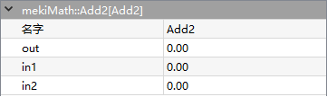
Add2 performs sum of inputs.
\[Out = In1 + In2\]- Parameters:
Out (real) – Output value of adding In1 and In2
In1 (real) – Input value 1
In2 (real) – Input value 2
{kind=link}
- Avg10
- 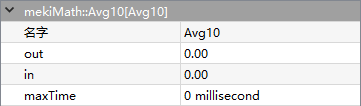
Avg10 performs the division in 10 for the last 10 input value. It will sample current value again if it does not change in max time (ms) duration.
\[Out = \frac{ΣIn} {10}\]- Parameters:
Out (real) – Average output value of last 10 In
In (real) – Input value
MaxTime (integer) – Maximum time of sampling period
{kind=link}
- AvgN
- 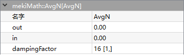
AvgN perform the equation below. The purpose is to make the output to have certain proportion inherits the input value and the previous output value.
\[Out = 1* \frac{In}{DF} + \frac{(DF-1)*Out}{DF}\]DF=Damping Factor
For example, In=A, Last output=B, DF =16
\[Out = \frac{A}{16} + \frac{15B}{16}\]- Parameters:
Out (real) – Average output value with damping factor
In (real) – Input value
DampingFactor (integer) – Decay factor (1-max)
{kind=link}
- Ceiling
- 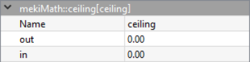
Ceiling performs the least integer that is greater than or equal to the input.
\[Out = ⌈In⌉\]- Parameters:
Out (real) – Ceiling output of In
In (real) – Input value
{kind=link}
- Div2
- 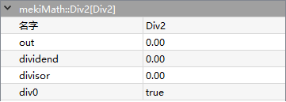
Div2 performs division operation.
\[Out = \frac{dividend} {divisor}\]- Parameters:
Out (real) – Result of divided Divided by Divisor
Dividend (real) – Input value
Divisor (real) – Input value
Div0 (boolean) – Equal to true when dividend=0, otherwise Div0=false (read only)
{kind=link}
- Exp
- 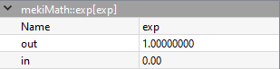
Exp performs the exponential function on the input.
\[Out = e^{In}\]- Parameters:
Out (real) – Exponential value of In
In (real) – Input value
{kind=link}
- Fabs
- 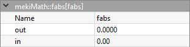
Fabs performs the absolute value on the input.
\[Out = |{In}|\]- Parameters:
Out (real) – Absolute value of In
In (real) – Input value
{kind=link}
- FloatOffset

FloatOffset adjusts the output value on top of the offset.
\[Out = In + offset\]- Parameters:
Out (real) – Output value off adding In and Offset
In (real) – Input value
Offset (real) – Input value
- Floor
- 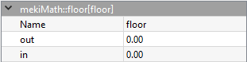
Floor performs the greatest integer that is less than or equal to the input.
\[Out = ⌊In⌋\]- Parameters:
Out (real) – Floor result of In
In (real) – Input value
{kind=link}
- Inverse
- 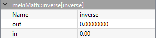
Inverse takes the inverse of input.
\[Out = \frac{1}{In}\]- Parameters:
Out (real) – Inverse of In
In (real) – Input value
{kind=link}
- Log
- 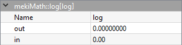
Log performs the natural logarithm of input.
\[Out = log(In)\]- Parameters:
Out (real) – Natural logarithm of In
In (real) – Input value
{kind=link}
- Log10
- 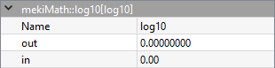
Log10 performs the base 10 logarithm of input.
\[Out = log_{10}(In)\]- Parameters:
Out (real) – Base 10 logarithm of In
In (real) – Input value
{kind=link}
- Max
- 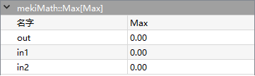
Max compares two input values, thus outputs the larger one.
- Parameters:
Out (real) – Output the higher value in between In1 and In2
In1 (real) – Input value 1
In2 (real) – Input value 2
{kind=link}
- Min
- 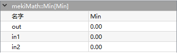
Min compares two input values, thus outputs the smaller one.
- Parameters:
Out (real) – Output the lower value in between In1 and In2
In1 (real) – Input value 1
In2 (real) – Input value 2
{kind=link}
- MinMax
- 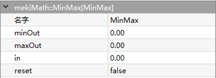
MinMax records the maximum and the minimum of the input value, min out outputs the minimum record while max out outputs the maximum record respectively, until they are updated.
- Parameters:
MinOut (real) – Min recorded In value
MaxOut (real) – Max recorded In value
In (real) – Input value
Reset (boolean) – Reset record value back to 0
{kind=link}
- Mul2
- 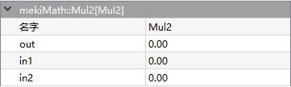
Mul2 performs multiplication operation.
\[Out = In1 × In2\]- Parameters:
Out (real) – Multiplication of In1 with In2
In1 (real) – Input value 1
In2 (real) – Input value 2
{kind=link}
- Pow
- 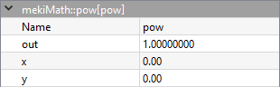
Pow performs the y power of x.
\[Out = X^{Y}\]- Parameters:
Out (real) – Result of Y power of X
X (real) – Input value 1
Y (real) – Input value 2
{kind=link}
- Neg
- 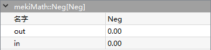
Neg negates the input value.
\[Out = - In\]- Parameters:
Out (real) – Negative value of In
In (real) – Input value
{kind=link}
- Round
- 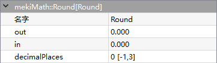
Round rounds the input value, can retain some digits according to the rounding algorithm.
- Parameters:
Out (real) – Rounding In value with DecimalPlaces
In (real) – Input value
DecimalPlaces (integer) – Retains decimal point
{kind=link}
- Squareroot
- 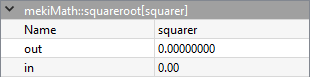
Squareroot performs square rooted of input.
\[Out = \sqrt{In}\]- Parameters:
Out (real) – square rooted value of In
In (real) – Input value
{kind=link}
- Sub2
- 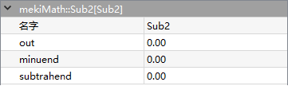
Sub2 performs subtraction operation.
\[Out = minuend - subtrahend\]- Parameters:
Out (real) – Subtraction of Minuend to Subtrahend
Minuend (real) – Input value
Subtrahend (real) – Input value
{kind=link}
- TimeAvg
- 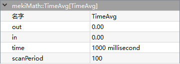
TimeAvg averages “In” over the configured time. The actual time is marked in a resolution of scan period such that number of sample. The out is NOT a running average, this object caches the average over the previous time as the out value, and updates out every “time” ms. Until a full time cycle has elapsed, the out is set to the average off all samples collected up until that point.
\[Out = \frac{Time * In}{ScanPeriod}\]- Parameters:
Out (real) – Average of In over configured time
In (real) – Input value to be taken average
Time (integer) – The time period over which to average the in value to get the out value
ScanPeriod (integer) – Cycle of sampling data, units is ms
{kind=link}